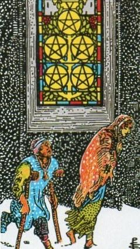
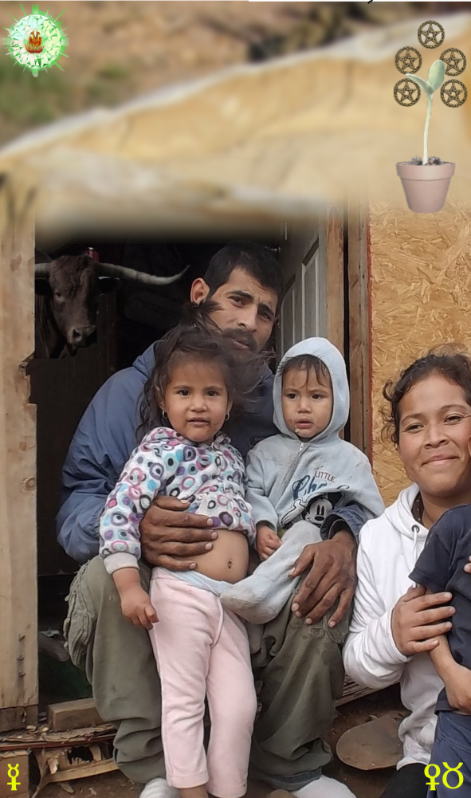
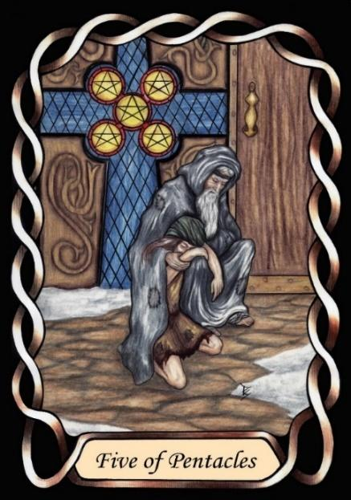

Five of Pentacles



Sign |
|
Two: parenting |
|
Sign Ruler |
|
Element |
Earth: practical |
Modality |
|
Symbol |
Bull |
Decan |
|
Decan Ruler |
|
Time |
Apr 20 - 29 |
Struggling Taurus I
An Apprentice learning at new parenthood, ruled by Venus and Mercury, maternal love and communication, resulting in a lack of resources and sleep, but not love.
We can see that the rulership of Venus continues over Taurus. We now enter the period of material poverty, as the new couple set out to build their life together, and raise children. Mercury shows the companionship they share as they work out how they will merge their lives, but money is not abundant. Nevertheless, they are optimistic that they can build towards a better life in the future.
This is a time when the husband sells his motorcycle or sports car to buy a practical people mover. Furniture is often second hand, and the home is functional but not pretty. The need to earn money is strong and relentless, and this often signifies the beginning of a career. Consider this the apprenticeship days.
Inverted: A testing time with only love to hold it together. Selfishness, or a poor choice of partner, can be catastrophic here. The consequence of externally imposed problems can be great. Traditionally they can last seven years, but not always. Marital Problems
Goldschneider Personology
These Taureans like to not only create, physically, but to create according to inventive designs. They like to see their own ideas manifested physically. Once they are set upon a vision to be manifested, they do not like to deviate, and can stubbornly resist changes of plan, as only a bull can. Preferring to do their own creating, they intensely dislike any interpersonal tension. Their partners must show peacefulness, cooperation and warmth.
RWS Imagery
Poverty of newlyweds, but with the anticipation of wealth in the future through hard work and cooperation.
Pymander Imagery
A poor but happy family with children. The money tree is small, but hopefully will grow.
Summary
Represents financial challenges, new parenthood, and family.